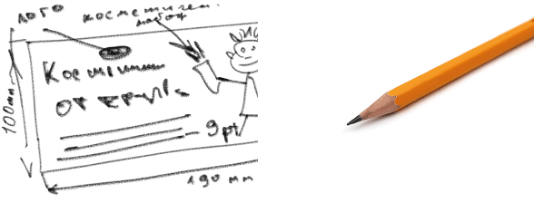

	<section class="back" id="con27">
		<section class="front1" id="design">
			
			<p>
				&nbsp Заказывая дизайн, стоит вспомнить, что мы не дизайн-бюро и не рекламное агентство, а студия оперативной полиграфии. НО готовы воплотить по мере сил и способностей ВАШИ идеи в какой-либо вид полиграфической продукции, макета для печати на сувенирах и т.д.<br>
				&nbsp Для того, чтобы представшее пред Вашим внутренним взором произведение не очень сильно отличалось от представленного позднее макета, нужно как можно подробнее описать, что именно Вы хотите увидеть на листовке, визитке, коллаже и т.п.  Для описания желательно использовать слова: слева, справа, в нижнем левом углу, прямо по центру и  т.п. Если в описании будут присутствовать единицы измерения (лучше мм), то в глубине души нашей зародится чувство благодарности. Если же Вы догадаетесь набросать макет карандашом на бумаге, сфотографировать телефоном и послать нам по электронной почте, то это ещё в большей степени будет способствовать нашему взаимопониманию.
			</p>
		</section>
	</section>